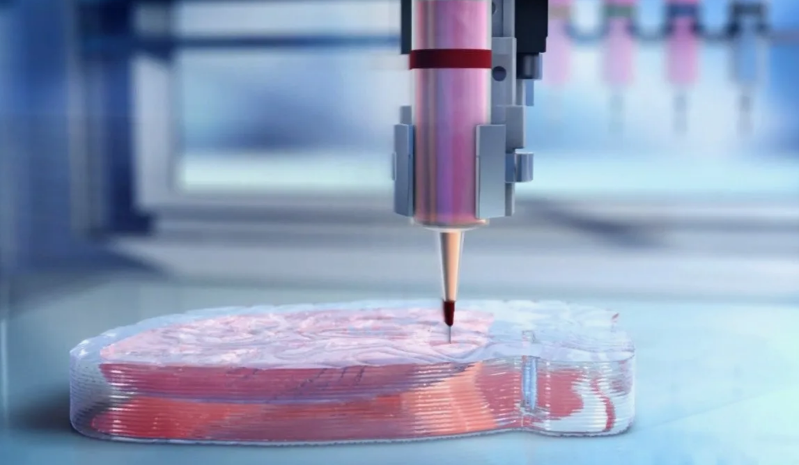
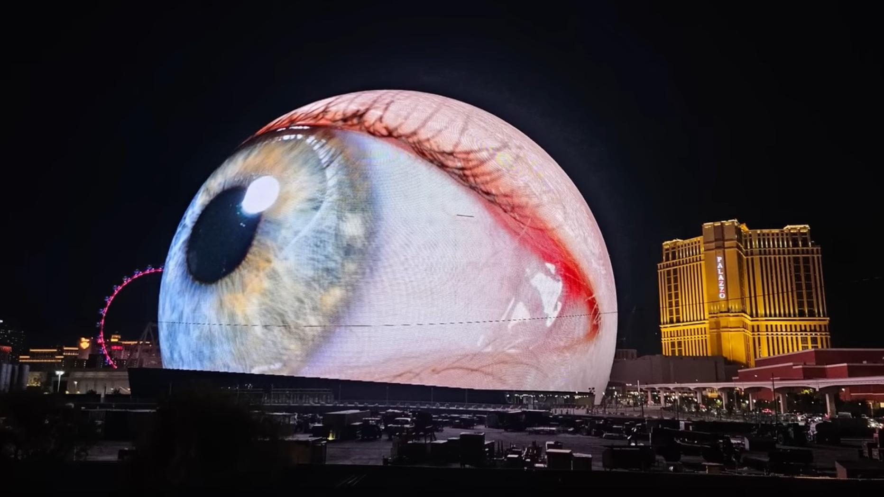
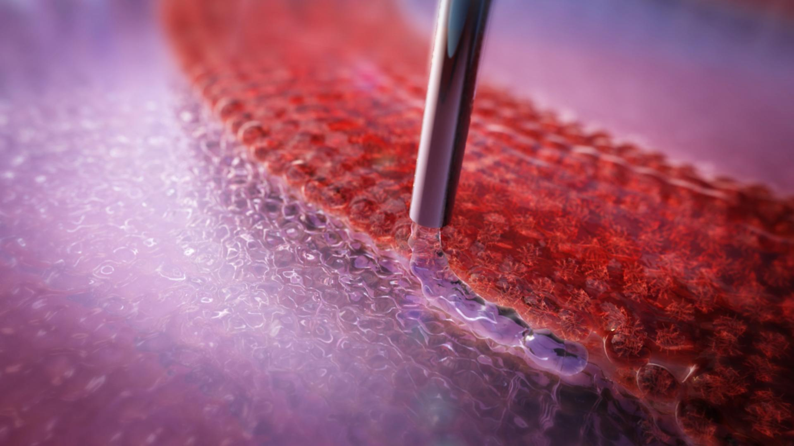
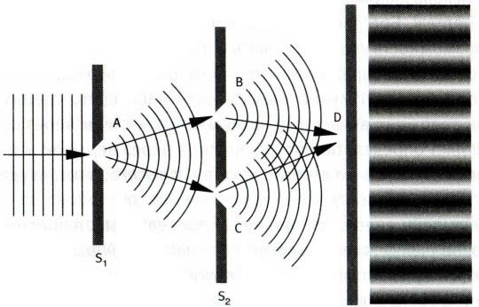
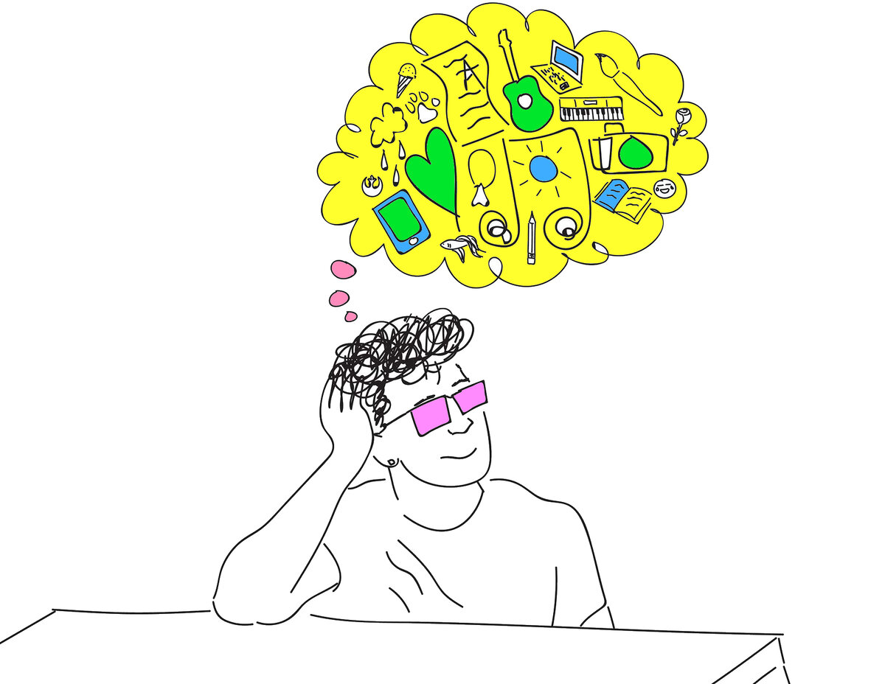
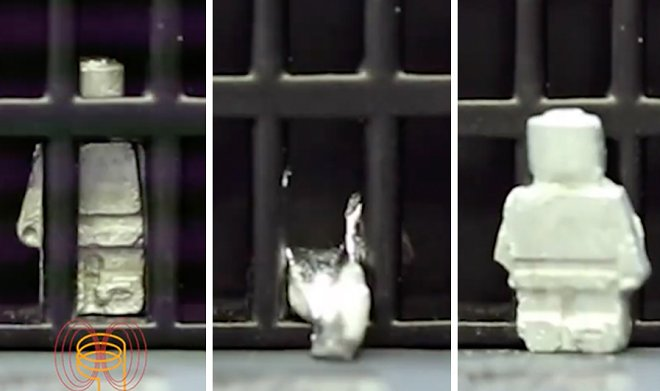
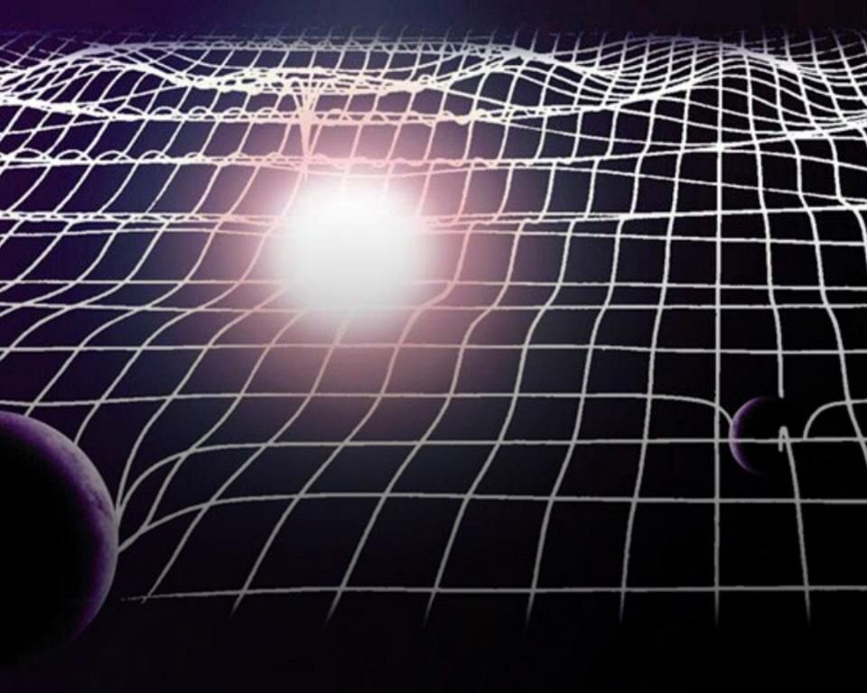
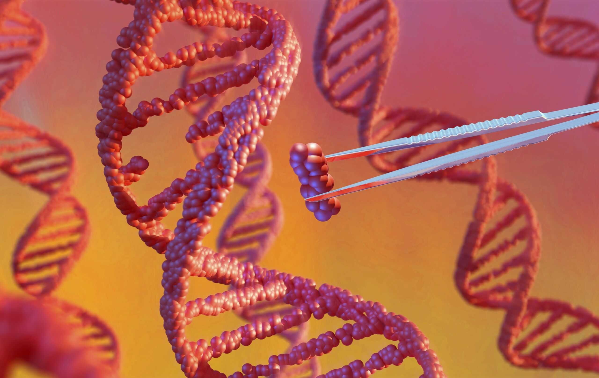

10 ВАЖНЫХ НАУЧНЫХ ОТКРЫТИЙ 2023
|
|
|
Наука не стоит на месте, а постоянно развивается и открывает новые горизонты для человечества.
В 2023 году было сделано множество удивительных и важных научных открытий и прорывов, которые затронули различные области знания, от астрономии и медицины до квантовой физики и синтетической биологии.
1.Живые чернила
Ученые разработали живые чернила для 3D-печати, способные к самовосстановлению.Полученные волокна могут использоваться для печати трехмерных структур. Эти волокна затем также можно объединять с другими генно-модифицированными микробами (E coli) для выполнения определенных задач с помощью своего рода программируемых функций.
Подробнее

2.GPT-4
GPT-4 - самая совершенная система OpenAI, обеспечивающая более безопасные и полезные ответы.GPT-4 обеспечивает более творческий подход и сотрудничество, чем когда-либо прежде. Он может генерировать, редактировать и повторять с пользователями творческие и технические письменные задания, такие как сочинение песен, написание сценариев или изучение стиля письма пользователя.
Подробнее
3.Sphere
MSG Sphere — сферическая музыкально-развлекательная арена, созданная в американском городе Лас-Вегас. Во время строительства использовали 4 бетонных каркаса, примерно 10 тыс. стальных прутьев и многочисленные светодиодные панели. Внутри расположена сцена, огромный круговой экран и места для зрителей.
Подробнее

4.«Выращивание» электродов в живых тканях
Ученые впервые смогли редактировать гены внутри человеческого тела
Исследователи из Швеции попали в список призеров за изобретение технологии, позволяющей «выращивать» электроды в тканях организма.
Подробнее

5.Воспроизведение опыта Юнга во временной области
Учёные снова доказали квантовую природу света, но теперь во времени — с опыта Юнга прошло 222 года
Подробнее

6.Передача мыслей
Декодер мозга переводит человеческие мысли — давая надежду тем, кто потерял речь
Подробнее
7.Жидкий робот
Инженеры разработали миниатюрных роботов, способных быстро и обратимо менять состояние из жидкого в твёрдое и обратно. Роботы не только умеют менять форму — они магнитны и проводят электричество.
Подробнее
8.Рябь в ткани пространства-времени
Консорциум астрономов NANOGrav обнаружил первые доказательства существования фона длинноволновых гравитационных волн, заполняющих космос, или «ряби в ткани пространства-времени».
Подробнее
9.Cверхпроводимость при комнатной температуре
На сайте arXiv обнаружилась статья, которая может стать предвестником нового мира. В ней южнокорейские учёные сообщают об открытии сверхпроводимости при комнатных температурах и обычном атмосферном давлении.
Подробнее
10.Изменение ген
В 2023 году медики из США и Франции сообщили о первом успешном случае редактирования генов прямо внутри человеческого тела. Ученые использовали новую технологию, называемую CRISPR-Cas9, которая представляет собой молекулярные «ножницы», которые могут вырезать и вставлять участки ДНК с высокой точностью.
Подробнее
|
|
|